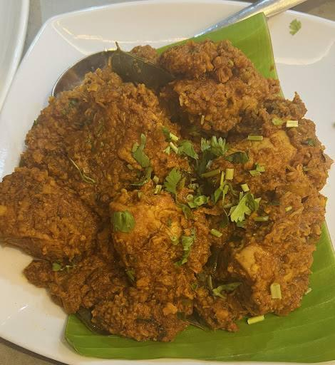
Prawns & crab ghee roast
Fiery, buttery and the dish Kodiyal is known for.
"Amazing food! It truly felt like home. We ordered the Crab Ghee Roast, Prawns Masala, and Prawns Mango Curry."Fiona P.
مطعم كوديالAl Wazir Building · Behind KFC · Al Nahda, Sharjah
Authentic Mangalorean coastal cooking: crab and prawn ghee roast, neer dosa, golibaje and Mangalore buns, fish thali and biryani, from breakfast at 7 AM until late.
4.8436 Google reviews4.8 from 436 reviews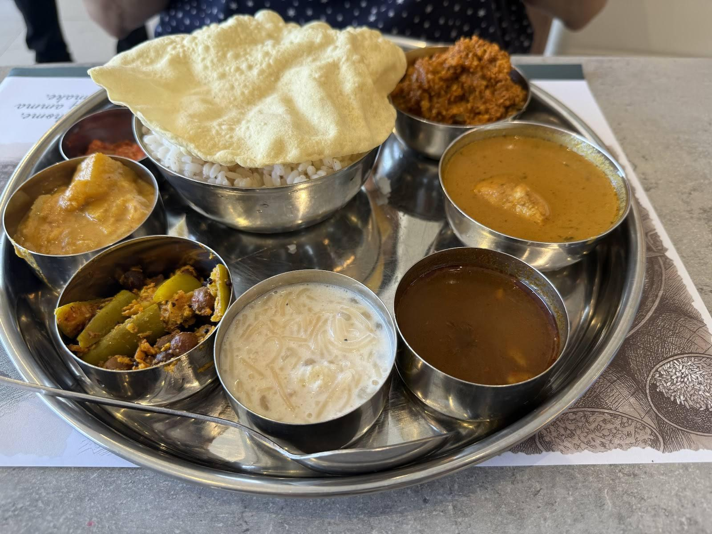
Right now
Checking…
From Google Maps popular times
What people order

Fiery, buttery and the dish Kodiyal is known for.
"Amazing food! It truly felt like home. We ordered the Crab Ghee Roast, Prawns Masala, and Prawns Mango Curry."Fiona P.
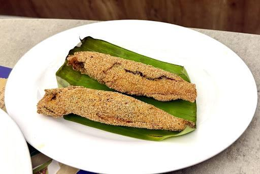
Rava-crusted and crisp.
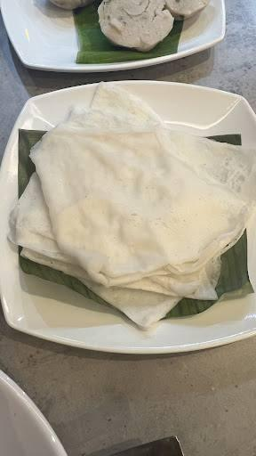
Soft neer dosa, Mangalore buns and golibaje.
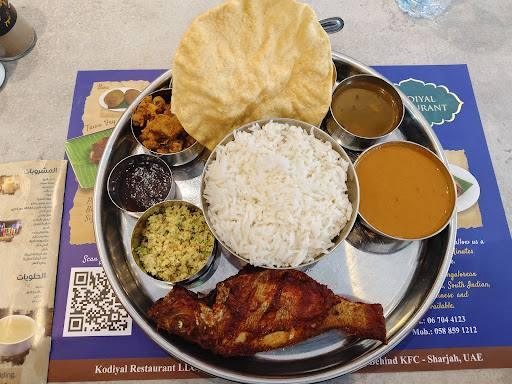
Weekday lunch thali with fish fry.
Get a table
Typical busyness by hour, from Google Maps.
Now Quiet Busy
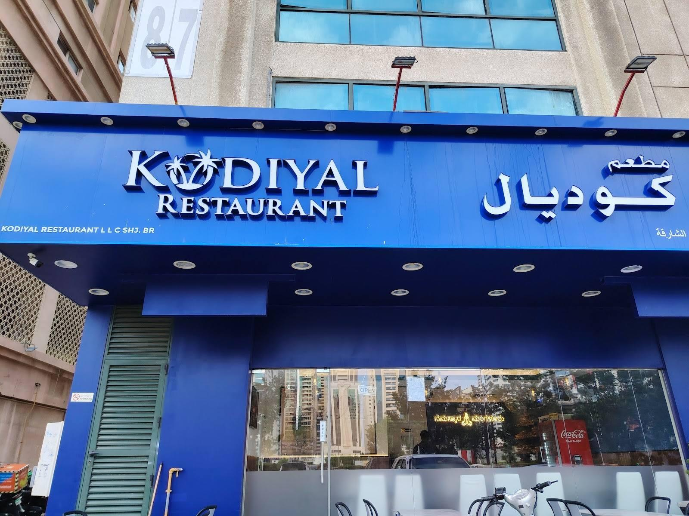
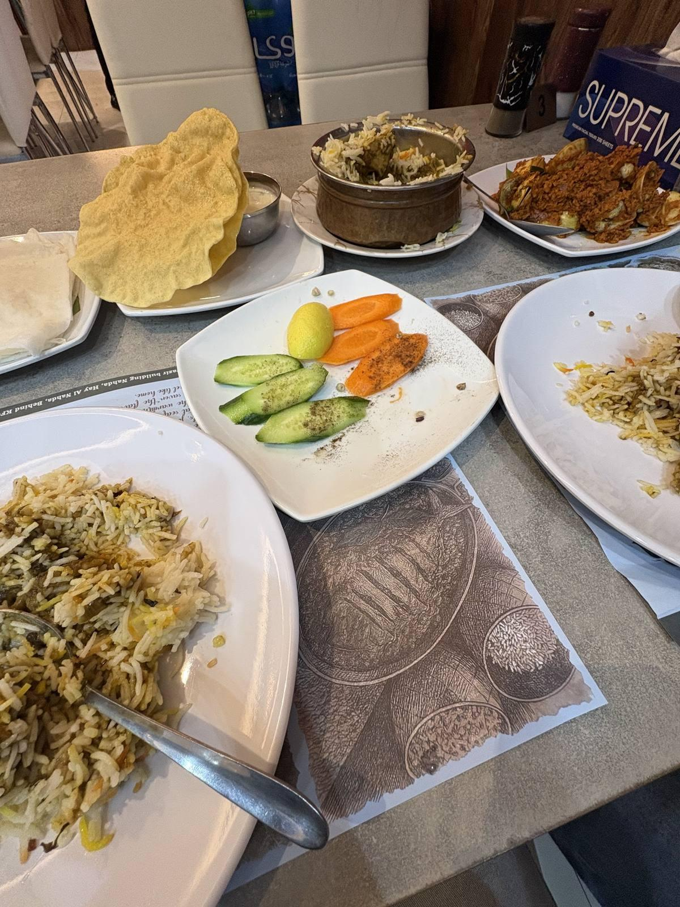
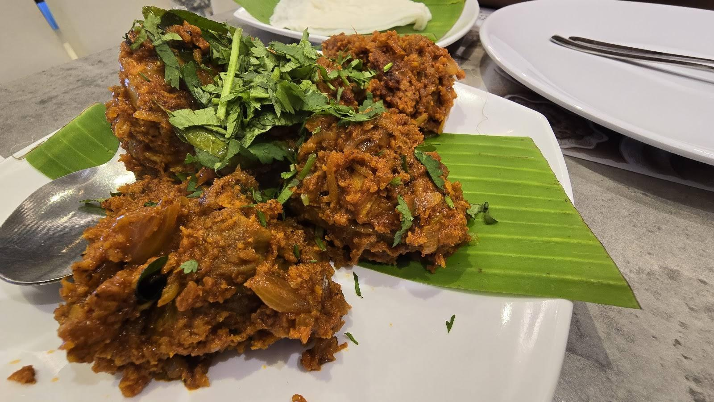
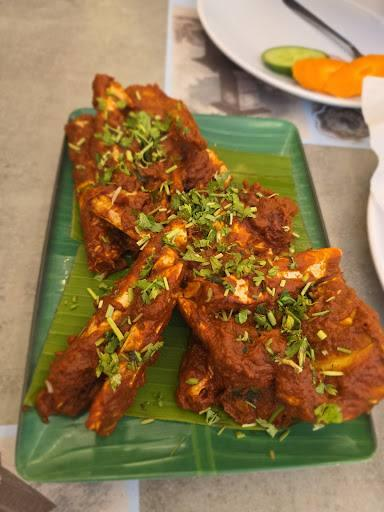
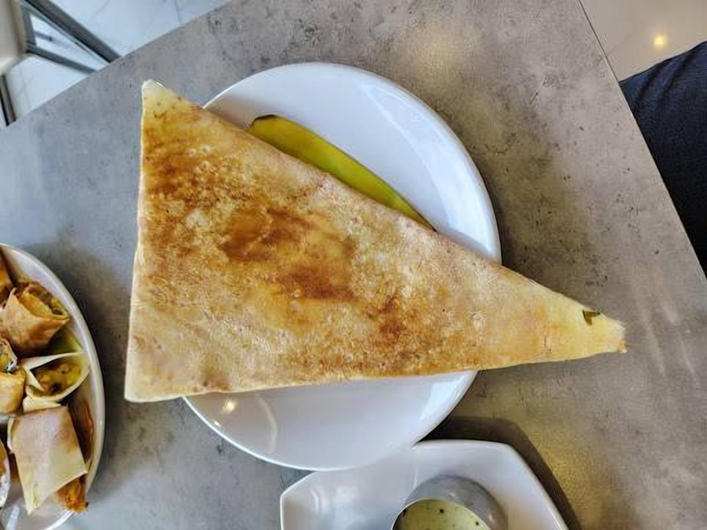
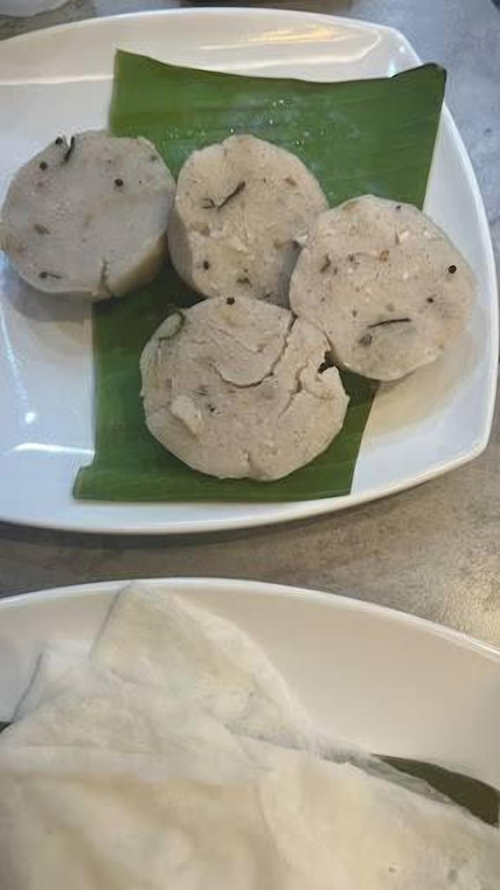
Photos from the Kodiyal Restaurant Sharjah Al Nahda Google Maps listing
"Amazing food! It truly felt like home. The staff were very friendly, and the owner was warm and welcoming. We ordered the Crab Ghee Roast, Prawns Masala, and Prawns Mango Curry, and every dish was absolutely delicious. The flavors were authentic, fresh, and perfectly cooked. It was a complete foodgasm! 😍 Definitely one of the best Mangalorean food experiences. Highly recommended, and I'll definitely be coming back!"
"One of the best of not the best mangalorean restaurants in Dubai and Sharjah… visited them for a late lunch they graciously accepted us. Staffs are friendly… food awesome… I had also visited their Dubai branch for breakfast… both Dubai and Sharjah branch food is amazing and good quality… all mangaloreans and all good food lovers must visit them… Dubai branch has slightly better interiors and more spacious.."
"Finally we have an authenic Mangalorean restaurant in Sharjah. We tried this restaurant upon suggestion by one of our friends. The food was amazing and also the service. You feel like you are eating the home cooked meal. Their biriyani reminded me of Mangalorean flavours. The fish thali is simply amazing. I would recommend this restaurant to anyone missing Mangalorean food"
"First time visit on 11.01.26. For having breakfast with family. Had ordered Goli Bhaji, Mangalore Buns, Kesari Bath and Ghee Dosa. The food taste was very good. The service was very quick. Will go there again to try their non-veg dishes for lunch or dinner. Overall very satisfying. My office colleagues had recommended this place as they were from mangalore."
Order
Tap a question and WhatsApp opens with it ready to send.
Find us
| Monday | 7 AM – 11 PM |
|---|---|
| Tuesday | 7 AM – 11 PM |
| Wednesday | 7 AM – 11 PM |
| Thursday | 7 AM – 11 PM |
| Friday | 7 AM – 12 AM |
| Saturday | 7 AM – 12 AM |
| Sunday | 7 AM – 11 PM |
+971 58 859 1212 (call or WhatsApp)